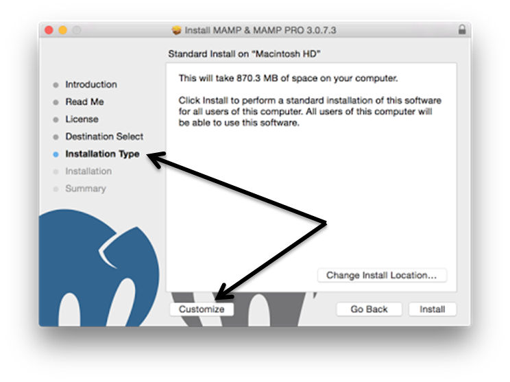
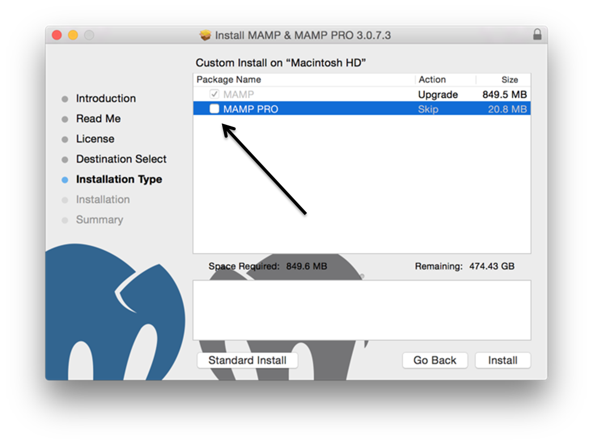

Configuring
PHP, Apache, MySQL, and Xdebug for PHP development in MAC OS X
This
tutorial shows you how to set up PHP on the MAMP (Macintosh, Apache, MySQL, PHP)
package, which includes the Apache web server, the MySQL database
server, and the PHP engine. MAMP is intended as a PHP development
environment for the Mac, which can work seamlessly with the NetBeans
IDE.
Xdebug is
an extension for PHP that aids in providing information valuable for
debugging PHP scripts. The NetBeans debugger works on top of the Xdebug
extension, providing an effective debugging tool in your development
environment.
Get
and Install MAMP
Go to http://www.mamp.info/en/downloads/ and download MAMP & MAMP PRO
Install the package but click
the customize button in the Installation Type step:

Uncleck the MAMP PRO then click Install

After installing MAMP, you will need to move your NetBeans projects
into its htdocs
/Applications/MAMP/htdocs
All future projects should be saved here. You may wish to unisntall
XAMPP as you will nto be using it.
Enabling
Xdebug with MAMP
MAMP
contains a pre-compiled xdebug.so file. To use this file,
enable it in MAMP's php.ini.
Xdebug does not work together with Zend Optimizer, so you also have to
disable Zend Optimizer in php.ini.
You can try using this php.ini
file. Copy it into /Applications/MAMP/bin/php/php5.6.2/conf (either
edit the php.ini file or save link as this in the directory).
To
enable Xdebug with MAMP:
- Open
the
php.ini file in an editor. This
file is located in:
/Applications/MAMP/conf/php5.x.x/php.ini
where x.x is the largest number you see in the folder (for example as
of these instructions php5.6.2 was the largest).
- Locate the [xdebug] section
and activate Xdebug. Add this section above the
zend_extension="/Applications/MAMP/bin/php5/lib/php/extensions/no-debug-non-zts-xxxxxxxx/xdebug.so"
(replace
xxxxxxxx with the actual number).
-
[xdebug]
xdebug.default_enable=1
xdebug.remote_enable=1
xdebug.remote_handler=dbgp
xdebug.remote_host=localhost
xdebug.remote_port=9000
xdebug.remote_autostart=1
zend_extension="/Applications/MAMP/bin/php5/lib/php/extensions/no-debug-non-zts-xxxxxxxx/xdebug.so"
For an explanation of these properties, see Related Settings in the Xdebug
Remote Debugging documentation.
- Note
that the remote port specified for Xdebug in the previous step is:
9000. This is the default debugger port used in NetBeans. To verify
this, choose NetBeans > Preferences from the main menu, then select
PHP in the Options window.

If needed, you can change the debugger port here.
- Start
(or restart) the MAMP Apache server.
Debugging
PHP Projects
To
debug a PHP project in the IDE, right-click the project in the Projects
window and choose Debug. Alternately, if the project is highlighted in
the Projects window, you can click the Debug Project icon (  )
in the main toolbar.
)
in the main toolbar.
You
can set the debugger to suspend on the first line of code by enabling
this option in the PHP
Options window.
When
a debugger session is active, the debugger toolbar displays above the
editor.
You
can also verify that a PHP debugging session is active by opening the
Sessions window. Choose Window > Debugging > Sessions from the
main menu.